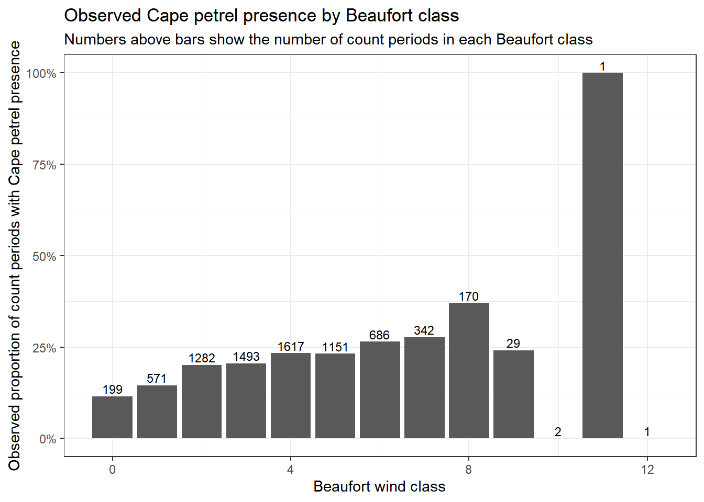
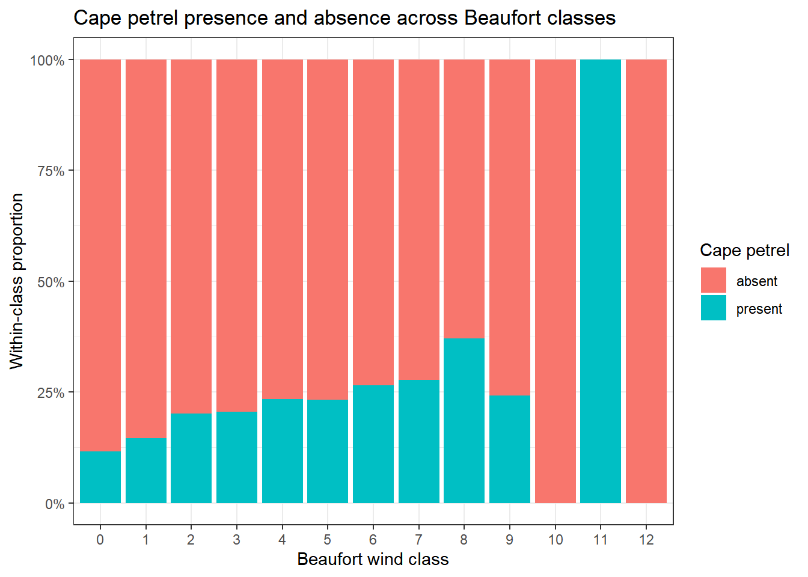
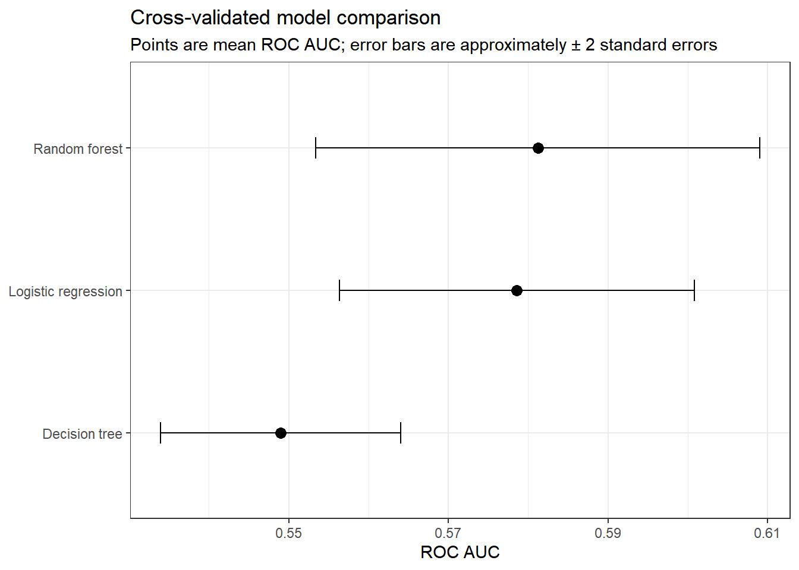
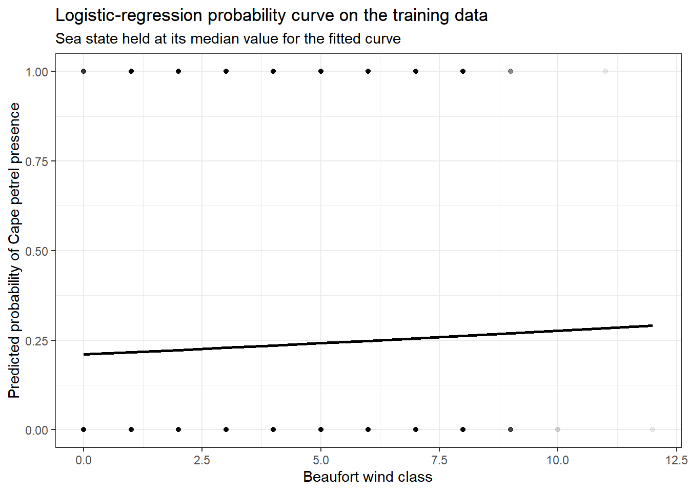
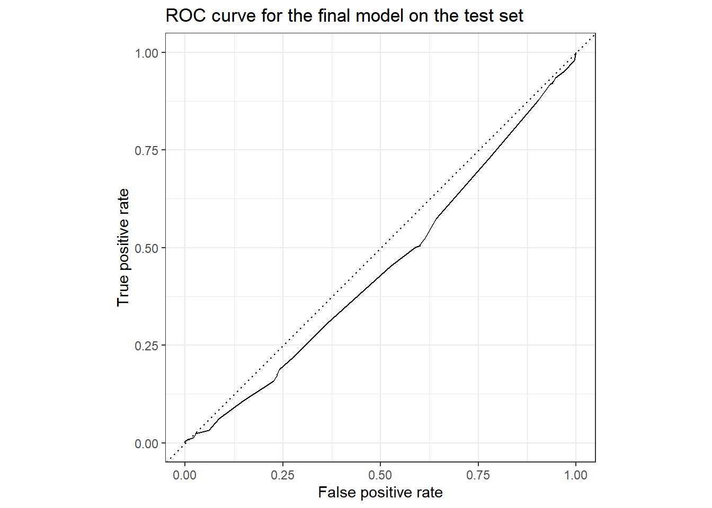
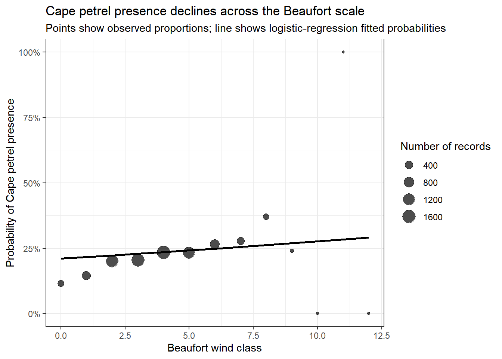

# makes all plots cleanertheme_set(theme_bw())# tells tidymodels that "present" is the positive classoptions(yardstick.event_first =FALSE)# sets seed for down stream model testing set.seed(123)
Introduction
The main scientific question for this analysis is:
At what Beaufort scale are Cape petrels no longer present?
This is a useful question because the Beaufort scale is a standardized measure of wind intensity, and stronger wind conditions may affect whether Cape petrels are observed during a 10-minute census period. The companion question is whether sea state adds additional information beyond Beaufort scale.
Working hypothesis
My hypothesis is that:
Cape petrels become less likely to be present as Beaufort scale increases, and their probability of presence may drop to near zero at very high Beaufort classes.
This question maps naturally to a binary classification problem. For each ship observation period, the outcome will be whether Cape petrels were present or absent. The main predictor of interest is Beaufort wind class wind_speed_class, and a secondary environmental predictor is sea state class sea_state_class.
Data Sources
The analysis uses four files:
birds.csv: bird observations recorded during count periods
ships.csv: ship-level observation conditions, including Beaufort class and sea state
A key structural point is that bird observations are stored at the species-observation level, meaning each record_id can appear many times if multiple species were recorded during the same count period. In contrast, the weather and ship variables are stored once per record_id in ships.csv.
That means we must first join the bird and ship data, then aggregate to one row per record_id so that the final modeling dataset represents a single count period with a single yes/no outcome for Cape petrel presence.
Load the data
# loading in data birds <-read_csv(here("tidytuesday-exercise","data","birds.csv"))
Warning: One or more parsing issues, call `problems()` on your data frame for details,
e.g.:
dat <- vroom(...)
problems(dat)
Rows: 49019 Columns: 26
── Column specification ────────────────────────────────────────────────────────
Delimiter: ","
chr (6): species_common_name, species_scientific_name, species_abbreviation...
dbl (9): bird_observation_id, record_id, count, n_feeding, n_sitting_on_wat...
lgl (11): sex, feeding, sitting_on_water, sitting_on_ice, sitting_on_ship, i...
ℹ Use `spec()` to retrieve the full column specification for this data.
ℹ Specify the column types or set `show_col_types = FALSE` to quiet this message.
Rows: 12310 Columns: 21
── Column specification ────────────────────────────────────────────────────────
Delimiter: ","
chr (7): hemisphere, activity, cloud_cover, precipitation, observer, censu...
dbl (12): record_id, latitude, longitude, speed, direction, wind_speed_clas...
date (1): date
time (1): time
ℹ Use `spec()` to retrieve the full column specification for this data.
ℹ Specify the column types or set `show_col_types = FALSE` to quiet this message.
Rows: 13 Columns: 4
── Column specification ────────────────────────────────────────────────────────
Delimiter: ","
chr (1): wind_description
dbl (3): wind_speed_class, wind_speed_knots_min, wind_speed_knots_max
ℹ Use `spec()` to retrieve the full column specification for this data.
ℹ Specify the column types or set `show_col_types = FALSE` to quiet this message.
Rows: 7 Columns: 4
── Column specification ────────────────────────────────────────────────────────
Delimiter: ","
chr (1): sea_state_description
dbl (3): sea_state_class, wave_meters_min, wave_meters_max
ℹ Use `spec()` to retrieve the full column specification for this data.
ℹ Specify the column types or set `show_col_types = FALSE` to quiet this message.
# join-check# Check whether every bird observation links to a ship observation through record_id.birds_join_check <- birds |>anti_join(ships, by ="record_id")tibble(bird_rows =nrow(birds),ship_rows =nrow(ships),bird_rows_without_matching_ship_record =nrow(birds_join_check)) |>kable(caption ="Join check for record_id")
Join check for record_id
bird_rows
ship_rows
bird_rows_without_matching_ship_record
49019
12310
1
The bird-level file contains many rows per record_id because several species can be recorded during the same census period. The ship file has one row per record_id. Therefore, our first data-wrangling goal is to combine these sources and then collapse to one row per count period.
Data wrangling and cleaning
Join bird and ship data
# joined datajoined_data <- birds |>left_join(ships, by ="record_id")
Define the outcome
The outcome should be whether Cape petrels were present during a count period. In the bird table, each row is a species observation, so the species name “Daption capense” identifies Cape petrels.
I create a logical indicator at the row level and then aggregate to the count-period level.
Here I explicitly count missing values in the environmental predictors.
missing_summary <-tibble(variable =c("wind_speed_class", "sea_state_class"),n_missing =c(sum(is.na(cape_record_data$wind_speed_class)),sum(is.na(cape_record_data$sea_state_class))),pct_missing =c(mean(is.na(cape_record_data$wind_speed_class)),mean(is.na(cape_record_data$sea_state_class))))missing_summary |>mutate(pct_missing =percent(pct_missing, accuracy =0.1)) |>kable(caption ="Missingness in the main predictors before cleaning")
Missingness in the main predictors before cleaning
variable
n_missing
pct_missing
wind_speed_class
4689
38.1%
sea_state_class
4752
38.6%
Why remove rows with missing Beaufort or sea state?
The scientific question is specifically about Beaufort scale and, secondarily, sea state. If either predictor is missing, that row cannot contribute to a model answering this question. Therefore, removing rows with missing predictor values is justified here.
Remove rows with missing predictor values and standardize variable types
# clean datacape_clean <- cape_record_data |>filter(!is.na(wind_speed_class),!is.na(sea_state_class) ) |>mutate(# Keep the outcome as a factor for classification models.cape_petrel_present =factor(if_else(cape_petrel_present, "present", "absent"),levels =c("absent", "present") ),# Keep Beaufort and sea state numeric because the question is about a threshold# along an ordered environmental gradient.wind_speed_class =as.numeric(wind_speed_class),sea_state_class =as.numeric(sea_state_class) )
# cleaning resultstibble(stage =c("Aggregated to one row per record_id","After removing missing Beaufort/sea-state rows"),rows =c(nrow(cape_record_data), nrow(cape_clean))) |>kable(caption ="Rows retained after cleaning")
Rows retained after cleaning
stage
rows
Aggregated to one row per record_id
12310
After removing missing Beaufort/sea-state rows
7544
Check outcome balance
Before modeling, it is useful to know whether the outcome is very imbalanced.
The outcome is somewhat imbalanced, with absence more common than presence, but there are still many positive observations. That makes a binary classification analysis reasonable.
This table is useful. It shows where Cape petrels are common, rare, or unobserved. It is also important to watch sample size: the highest Beaufort classes may have very few observations, so an observed zero there does not necessarily prove the true probability is zero.
Figure: observed proportion present by Beaufort class
# fig-beaufort-proportionggplot(beaufort_presence, aes(x = wind_speed_class, y = prop_present)) +geom_col() +geom_text(aes(label = n_records), vjust =-0.3, size =3) +scale_y_continuous(labels =percent_format(accuracy =1)) +labs(title ="Observed Cape petrel presence by Beaufort class",subtitle ="Numbers above bars show the number of count periods in each Beaufort class",x ="Beaufort wind class",y ="Observed proportion of count periods with Cape petrel presence" )

This plot is useful because it shows both the pattern of presence and the sample size in each Beaufort class.
Sea state is not the main question, but it may help explain additional variation and could improve predictive performance when included as a second predictor.
Figure: raw counts by presence/absence across Beaufort classes
# fig-raw-countsggplot(cape_clean, aes(x =factor(wind_speed_class), fill = cape_petrel_present)) +geom_bar(position ="fill") +scale_y_continuous(labels =percent_format()) +labs(title ="Cape petrel presence and absence across Beaufort classes",x ="Beaufort wind class",y ="Within-class proportion",fill ="Cape petrel" )

This proportional stacked bar plot gives another view of the same question and helps visualize how the composition of presence/absence changes across wind classes.
Modeling setup
Why a binary classification framework?
The outcome has two categories: present and absent. That means classification models are appropriate. To satisfy the assignment, I fit three different model types:
Logistic regression
Decision tree
Random forest
Train/test split
The test set will only be used once at the very end. Therefore, all model development, tuning, and comparison will happen on the training data only.
Logistic regression is the most directly interpretable model for this question because it estimates the probability of Cape petrel presence as Beaufort class changes.
Top decision-tree settings by cross-validated ROC AUC
cost_complexity
tree_depth
min_n
.metric
.estimator
mean
n
std_err
.config
0e+00
6
11
roc_auc
binary
0.5489569
5
0.0075215
pre0_mod14_post0
1e-07
6
11
roc_auc
binary
0.5489569
5
0.0075215
pre0_mod30_post0
1e-04
6
11
roc_auc
binary
0.5489569
5
0.0075215
pre0_mod46_post0
0e+00
6
2
roc_auc
binary
0.5487325
5
0.0076187
pre0_mod13_post0
1e-07
6
2
roc_auc
binary
0.5487325
5
0.0076187
pre0_mod29_post0
Model 3: Random forest
Random forest is the most flexible of the three models and may capture nonlinear relationships between Beaufort class, sea state, and Cape petrel presence.
# fig-model-comparisonmodel_compare_plot <-bind_rows(log_summary, tree_summary, rf_summary)ggplot(model_compare_plot, aes(x =reorder(model, mean), y = mean)) +geom_point(size =3) +geom_errorbar(aes(ymin = mean -2* std_err, ymax = mean +2* std_err), width =0.15) +coord_flip() +labs(title ="Cross-validated model comparison",subtitle ="Points are mean ROC AUC; error bars are approximately ± 2 standard errors",x =NULL,y ="ROC AUC" )

Choose a final model
I choose logistic regression as the final model. # Why choose logistic regression?
I choose logistic regression because my question asks about where Cape petrels stop appearing as Beaufort class increases. Logistic regression directly models probability along that gradient.It is easier to interpret. It is less likely to overfit than more flexible models. Finally, at very high wind classes there are very few observations, so a smooth, interpretable model is preferable to a highly flexible one.
Finalize and fit the selected model on the training data
# finalize-logisticfinal_log_fit <-fit(log_workflow, data = train_data)
Training-data interpretation: coefficients and odds
To interpret the logistic regression, I inspect the fitted coefficients.
# coefficient-tablecoef_table <-tidy(extract_fit_parsnip(final_log_fit)) |>mutate(odds_ratio =exp(estimate))coef_table |>mutate(across(c(estimate, std.error, statistic, p.value, odds_ratio), round, 3)) |>kable(caption ="Logistic regression coefficients fit on the training data")
Warning: There was 1 warning in `mutate()`.
ℹ In argument: `across(...)`.
Caused by warning:
! The `...` argument of `across()` is deprecated as of dplyr 1.1.0.
Supply arguments directly to `.fns` through an anonymous function instead.
# Previously
across(a:b, mean, na.rm = TRUE)
# Now
across(a:b, \(x) mean(x, na.rm = TRUE))
Logistic regression coefficients fit on the training data
term
estimate
std.error
statistic
p.value
odds_ratio
(Intercept)
-2.202
0.123
-17.842
0.000
0.111
wind_speed_class
0.036
0.029
1.258
0.208
1.037
sea_state_class
0.220
0.050
4.413
0.000
1.246
The coefficient table tells us the direction of the association. A negative coefficient for wind_speed_class would mean that the probability of Cape petrel presence decreases as Beaufort class increases, after accounting for sea state.
Training-data model diagnostics
For classification models, residuals are less central than in ordinary regression, but I still wanted to how predicted probabilities behave and whether the model captures the overall trend.
Predicted probability curve on the training data
# train-probability-curvetrain_grid <-crossing(wind_speed_class =seq(min(train_data$wind_speed_class), max(train_data$wind_speed_class), by =1),sea_state_class =median(train_data$sea_state_class))train_curve <- train_grid |>bind_cols(predict(final_log_fit, new_data = train_grid, type ="prob") )ggplot() +geom_point(data = train_data,aes(x = wind_speed_class,y =as.numeric(cape_petrel_present =="present") ),alpha =0.08,height =0.02 ) +geom_line(data = train_curve,aes(x = wind_speed_class, y = .pred_present),linewidth =1 ) +labs(title ="Logistic-regression probability curve on the training data",subtitle ="Sea state held at its median value for the fitted curve",x ="Beaufort wind class",y ="Predicted probability of Cape petrel presence" )
Warning in geom_point(data = train_data, aes(x = wind_speed_class, y =
as.numeric(cape_petrel_present == : Ignoring unknown parameters: `height`

This figure is useful because it shows the model’s estimated probability of Cape petrel presence across the Beaufort scale while keeping sea state fixed. The faint points show the observed binary outcomes, and the line shows the smoothed model-based relationship.
evaluation on the test set
Now that model selection is complete, I evaluate the chosen model on the test set.
# test-metricstest_predictions |>class_metrics(truth = cape_petrel_present, estimate = .pred_class, .pred_present) |>kable(caption ="Final test-set performance for the selected model")
Warning: The global option `yardstick.event_first` was deprecated in yardstick 0.0.7.
ℹ Please use the metric function argument `event_level` instead.
ℹ The global option is being ignored entirely.
ℹ The deprecated feature was likely used in the yardstick package.
Please report the issue at <https://github.com/tidymodels/yardstick/issues>.
Final test-set performance for the selected model
.metric
.estimator
.estimate
accuracy
binary
0.7795443
sens
binary
1.0000000
spec
binary
0.0000000
roc_auc
binary
0.4500757
Test-set confusion matrix
# test-confmatconf_mat(test_predictions, truth = cape_petrel_present, estimate = .pred_class)
Truth
Prediction absent present
absent 1471 416
present 0 0
The confusion matrix shows that the model predicts all observations as absence, failing to identify any instances of Cape petrel presence. While the model achieves moderate overall accuracy due to the high number of absence observations, it has zero sensitivity and is therefore not useful for detecting Cape petrels. This suggests either class imbalance or that Beaufort scale and sea state alone are insufficient predictors of presence. Therefore, Beaufort scale alone does NOT strongly determine Cape petrel presence.
Test-set ROC curve
# fig-test-roctest_predictions |>roc_curve(truth = cape_petrel_present, .pred_present) |>autoplot() +labs(title ="ROC curve for the final model on the test set",x ="False positive rate",y ="True positive rate" )

These test-set results provides a visual assessment of how well the final model generalizes to unseen data.
Scientific summary figure
# fig-summarysummary_grid <-crossing(wind_speed_class =seq(min(cape_clean$wind_speed_class), max(cape_clean$wind_speed_class), by =1),sea_state_class =median(cape_clean$sea_state_class))summary_curve <- summary_grid |>bind_cols(predict(final_log_fit, new_data = summary_grid, type ="prob") )ggplot() +geom_point(data = beaufort_presence,aes(x = wind_speed_class, y = prop_present, size = n_records),alpha =0.7 ) +geom_line(data = summary_curve,aes(x = wind_speed_class, y = .pred_present),linewidth =1 ) +scale_y_continuous(labels =percent_format(accuracy =1)) +labs(title ="Cape petrel presence declines across the Beaufort scale",subtitle ="Points show observed proportions; line shows logistic-regression fitted probabilities",x ="Beaufort wind class",y ="Probability of Cape petrel presence",size ="Number of records" )

This is the main scientific summary figure. It shows both the empirical proportion of count periods with Cape petrels present and the fitted logistic-regression relationship.
What Beaufort scale appears to mark non-presence?
This question must be answered carefully. With ecological observation data, saying a species is “no longer present” is strong language now that I look back. A better interpretation is might be:
At what Beaufort scale does Cape petrel presence become very unlikely in the available data?
High Beaufort classes have much smaller sample sizes, so a zero count in a class with only one or two observations is not strong evidence of true absence. Therefore, I interpret the results as identifying a range where presence becomes rare rather than a single definitive cutoff guaranteed in nature.
Main takeaway
The main thing learned from this analysis is that Cape petrel presence becomes less likely under some Beaufort conditions, but the exact “disappearance point” must be interpreted with caution because the most extreme Beaufort classes are rare in the dataset. In other words, the data can identify where Cape petrels become uncommon or very unlikely, but they do not support an overly strong claim that a single Beaufort class is a definitive universal threshold for absence.